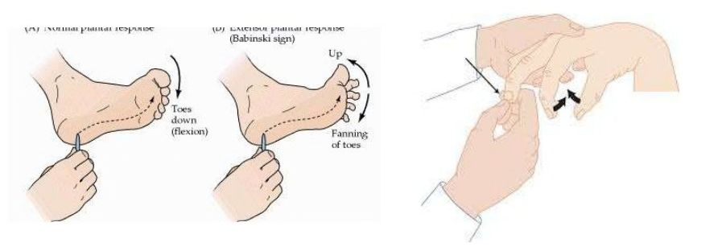

Cervicalgies générales & torticolis
Types de torticolis, red flags, traitements
Cervicalgies générales
Fréquence
Très fréquentes.
Localisation
Douleur de la région du cou, C0-C7/T1.
Classification
Aiguë, subaiguë, chronique · causes multiples.
Pourquoi si exposées
Les cervicales supportent le poids de la tête et la zone est très mobile.
Le torticolis
Définition : « contracture plus ou moins douloureuse des muscles du cou, limitant les mouvements de rotation de la tête. »
| Type | Description |
|---|---|
| 1) Congénital | Bébé à la naissance ; secondaire à la position intra-utérine ou à l'accouchement · spasme du SCOM. |
| 2) Acquis chez l'enfant — syndrome de Grisel | Apparition soudaine, souvent après une infection des voies respiratoires supérieures (gorge). Peut entraîner une instabilité ligamentaire et des problèmes graves comme une paralysie. 🚩 Red flag. |
| 3) Adulte | DLR cervicale soudaine · plusieurs causes mécaniques possibles · tentative de protection du corps. |
Signes et symptômes
Signes
Perte d'amplitude cervicale +++, surtout en rotation homolatérale et inclinaison opposée · posture de tête parfois modifiée : rotation cervicale opposée et inclinaison homolatérale (contraction du SCOM) · tensions palpables.
Symptômes
DLR cervicale unilatérale +++ · douleur sans horaire (constante).
Évolution
S&S intenses environ 72 h ; peuvent persister de façon modérée 1 à 2 semaines.
Causes & facteurs de risque
Mécaniques
Mauvaise posture (sommeil / travail / loisir) · problème discal · problème arthrosique · ATCD d'entorse cervicale · stress.
Instabilité
Instabilité articulaire acquise, ou secondaire à une hyperlaxité congénitale.
Terrain
Femmes > hommes · enfants en croissance (articulations plus instables) · parfois sans raison.
🚩 RED FLAG — Si les torticolis sont très fréquents et accompagnés de céphalées / fièvre / vertige / nausées / photophobie : suspicion de méningite, atteinte neurologique, infection sévère.
Traitements
Pharmacologie
Anti-douleur / AINS / relaxant musculaire.
Thérapies manuelles
Physio / ostéo / massothérapie / acupuncture.
Autres
Chaleur · étirements doux.
Source : « Sémiologie II — Introduction et Cervicalgies », Maude Riendeau — 3e année, IEOQ 2026-2027.
Le whiplash
Mécanismes, S&S, pronostic
Le whiplash (coup du lapin)
Définition : « mouvements rapides de flexion suivis rapidement d'une extension (ou vice versa), accompagnés ou non de rotation. »
Chronicité
Cause fréquente de DLR chronique : 15-40 % → cervicalgie chronique / céphalée chronique.
Délai des douleurs
70 % ont des DLR immédiatement · 30 % auront un délai avant l'apparition.
Structures atteintes
Atteintes ligamentaires, discales, musculaires et neurologiques possibles.
Causes & mécanismes de lésion
Mécanismes
Accident de voiture · chute vers l'arrière (ex. glace) · impact sur le menton · impact sur un objet (ex. poutre) · plongeon dans un lac/piscine peu profonde · football / hockey.
Signes et symptômes
Signes
Posture en flexion · diminution du ROM cervical, surtout en inclinaisons et rotations · tensions palpables : cervicales / épaules / interscapulaire / thorax antérieur.
Symptômes
DLR cervicale · céphalées occipito-frontales, parfois rétro-oculaires (dure-mère) et aux tempes · symptômes post-commotion cérébrale possibles · dysphagie : rare mais possible.
Pronostic
19-60 % des patients avec un Dx de whiplash ont encore des symptômes 6 mois post-trauma.
Facteurs qui influencent le pronostic
Perte de mobilité post-whiplash · historique de cervicalgies antérieures · âge · femme > homme · atteinte psychologique (anxiété / dépression…) (Scholten-Peeters et al.).
Diagnostic & traitements
Diagnostic
Clinique · radiographie (pourrait montrer une rectitude).
Traitements
Anti-douleur / AINS / relaxant musculaire · physio / ostéo / massothérapie / acupuncture. Beaucoup de patients SAAQ.
Source : « Sémiologie II — Introduction et Cervicalgies », Maude Riendeau — 3e année, IEOQ 2026-2027.
Cervicalgies dégénératives
Discopathie, cervicarthrose
Cervicalgies subaiguës & chroniques
Origine
Généralement dégénérative : arthrose ou discopathies.
Épidémiologie
Possible dès la trentaine · 50 % des 40 ans et + = cervicarthrose · touche plus sévèrement C5-C6 et C6-C7.
Clinique
Majorité des cas : asymptomatique.
Types
| Atteinte | Description |
|---|---|
| Discopathie dégénérative | Dégénérescence du disque intervertébral entraînant une diminution de l'espace intervertébral (discopathies revues plus tard) · discarthrose C3-C7. |
| Cervicarthrose | Uncarthrose (reliefs osseux latéraux, C3-C7) · arthrose facettaire (arrière de la vertèbre, tout le rachis cervical). |
Signes et symptômes
Signes
Diminution du ROM cervical, surtout en extension · tensions palpables · examen neuro normal (sauf cas sévère).
Symptômes
DLR cervicale matinale et parfois en soirée · idem pour la raideur · sensation de « sable dans le cou » · céphalée · vertige · irradiation possible au membre supérieur, uni- ou bilatérale.
Diagnostic & traitements
Diagnostic
Radiographie · IRM (pour éliminer une autre cause, ex. hernie discale).
Traitements
Anti-douleur / AINS / relaxant musculaire · physio / ostéo / massothérapie / acupuncture · infiltrations intra-articulaires (cortisone / botox / bloc facettaire / bloc foraminal).
Source : « Sémiologie II — Introduction et Cervicalgies », Maude Riendeau — 3e année, IEOQ 2026-2027.
Hernie discale cervicale & myélopathie
Radiculopathie, red flag myélopathie
Cervicalgie secondaire à une hernie discale cervicale
Définition : « protrusion d'un fragment du disque intervertébral. »
Épidémiologie
Hommes > femmes · dès la trentaine · touche le plus souvent C5-C6 et C6-C7 · moins commune que l'hernie discale lombaire.
Origine
Traumatique ou dégénérative · symptomatique ou asymptomatique.
Signes et symptômes (radiculopathie)
Signes
Diminution du ROM cervical · tensions palpables · tests neuro positifs : dermatome / myotome · compression / distraction · Valsalva (positif ou négatif) · déglutition (positive ou négative).
Symptômes
DLR cervicale locale et/ou référée (homo- ou controlatérale) · céphalées possibles · paresthésies du/des membre(s) supérieur(s).
🚩 RED FLAG — Si les S&S d'hernie discale comprennent ceux de la myélopathie → référer.
Myélopathie cervicale — signes et symptômes
Signes
Les tests cervicaux accentuent les S&S · faiblesse des membres supérieurs ET inférieurs · démarche instable · difficulté récente à boutonner ses vêtements · difficulté récente à écrire / changement d'écriture · réflexes hyperactifs · clonus · signe de Babinski · signe d'Hoffmann · spasticité.
Symptômes
Pas nécessairement de DLR cervicale · paresthésies (engourdissement / picotements / fourmillements) d'au moins 1 membre, possiblement les membres inférieurs · troubles intestinaux et vésicaux possibles (rare → lésion grave de la moelle).

Diagnostic & traitements
Diagnostic
Clinique · radiographie · IRM · EMG.
Traitements
Anti-douleur / AINS / relaxant musculaire / Lyrica · physio / ostéo / ergo / acupuncture · infiltrations (cortisone / bloc facettaire / épidurale…) · chirurgie si compression radiculaire importante ou médullaire.
Source : « Sémiologie II — Introduction et Cervicalgies », Maude Riendeau — 3e année, IEOQ 2026-2027.
Autres causes, névralgie cervico-brachiale, défilé thoracique
Infection, tumeur, inflammatoire, post-partum, NCB
Autres causes de cervicalgie
| Cause | Points clés |
|---|---|
| 1) Infection | Peut entraîner une spondylodiscite · DLR / fièvre / aucun trauma. |
| 2) Tumorale | Bénigne ou maligne · peut comprimer les racines nerveuses · vos soins ne soulagent pas du tout · attention aux ATCD de cancer : métastases ? |
| 3) Inflammatoire | Spondylarthrite ankylosante · polyarthrite rhumatoïde. |
| 4) Accouchement / post-partum | Efforts +++ pendant l'accouchement · mauvaise posture (allaitement / biberon) · nouvelle charge ++. |
Névralgie cervico-brachiale
Définition : « DLR au membre supérieur de provenance cervicale qui suit un trajet radiculaire. » Origine rachidienne ou extra-rachidienne · possible à tout âge.
| Origine rachidienne | Origine extra-rachidienne |
|---|---|
| Traumatique · dégénérative (arthrose) · cancéreuse/tumorale · infectieuse (hématogène, iatrogène — ex. chirurgie) · « n'importe quoi qui pourrait causer une sténose ». | Syndrome du défilé thoracique (voir ci-dessous). |
Syndrome du défilé thoracique
Définition : « compression neuro-vasculaire dans la région thoracique. »
S&S
DLR · paresthésies du membre supérieur homolatéral · sensation de lourdeur ou fatigue · atrophie musculaire possible · faiblesse.
Causes
Côte surnuméraire · tensions des scalènes / petit pectoral · 1re côte surélevée · diminution de l'espace costo-claviculaire (mobilité articulaire vs tension du subclavier) · compression par tumeur / kyste · travailleurs manuels avec membre supérieur en élévation (peintre, électricien…) · sports similaires (nageur, tennis, baseball…) · mauvaise ergonomie à l'ordinateur et utilisation accrue.
Diagnostic
Difficile. Tests du défilé thoracique : Adson / Halstead / Wright · recherche d'une origine cervicale et/ou thoracique · évaluation posturale (respiration) · radiographie (Cx / Tx / épaule) · IRM (Cx / épaule) · écho · EMG · artériographie.
Traitements
Anti-douleur / AINS / relaxant musculaire / Lyrica · infiltrations (cortisone / bloc facettaire) · physio / ostéo · chirurgie si tumeur ou risque pour la moelle ; sinon rarement, mais possible pour une hernie discale.
Bibliographie du cours : article « Myélopathie cervicale dégénérative » · Institut du rachis parisien · Larousse & Larousse médical · Magee · Ordre professionnel de la physiothérapie du Québec · Rhumatologie, H. Marcotte, 6e éd., 2018 · Vitrine linguistique.
Source : « Sémiologie II — Introduction et Cervicalgies », Maude Riendeau — 3e année, IEOQ 2026-2027.